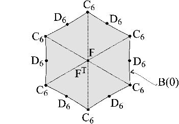

A non-affine two-parameter family of complex Hadamard matrices found by F. Szöllősi [104] $$X_6^{(2)}\big((x,y),(u,v)\big)=\left[\begin{array}{rrrrrr} 1& 1& 1& 1& 1& 1\\ 1& x^2 y& x y^2& (x y)/(u v)& u x y& v x y\\ 1& x/y& x^2 y& x/u& x/v& u v x\\ 1& u v x& u x y& -1& -u x y& -u v x\\ 1& x/u& v x y& -x/u& -1& -v x y\\ 1& x/v& (x y)/(u v)& -(x y)/(u v)& -x/v& -1 \end{array}\right].$$ The pairs of values of $(x, y)$ and $(u, v)$ are determined by the roots of $f_{\alpha}(z)$ and $f_{-\alpha}(z)$, respectively, where $$f_{\alpha}(z)=z^3-\alpha z^2+\bar{\alpha}z-1=0$$ and $\alpha$ belongs to the fundamental region of phases described by the intersection of the two deltois;

More information in [104].